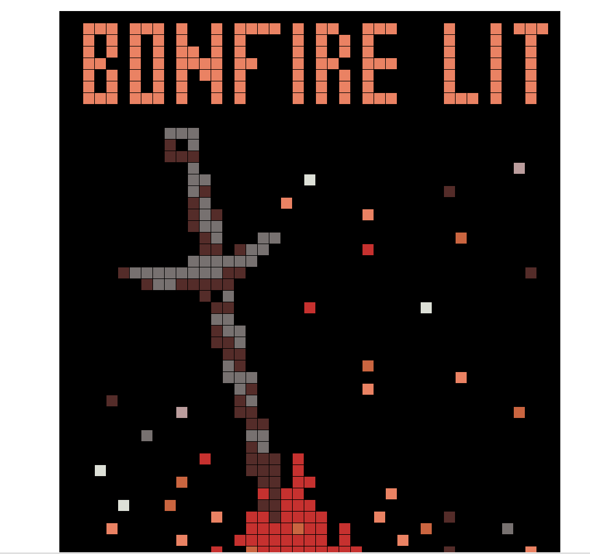

projects: I have started but not finished a scrap book of my time at tritech. Also I've been working on python scripts at home to try and make fun and cool shapes and images in turtle. At Tri-Tech I have done a lot of cool projects in turtle and other platforms. Here are some examples of my work. * mcpi